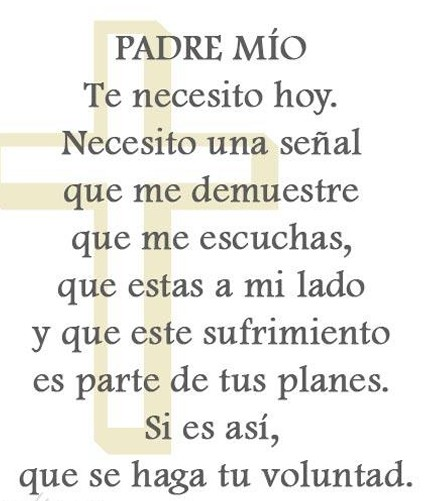
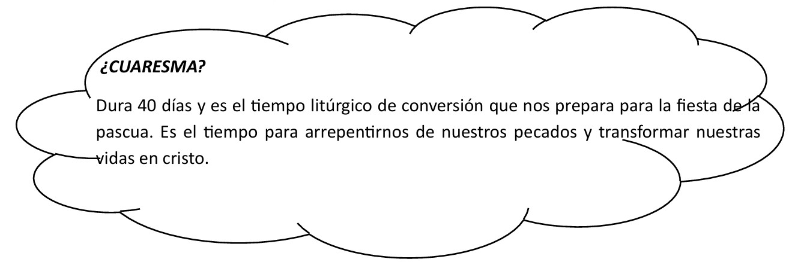
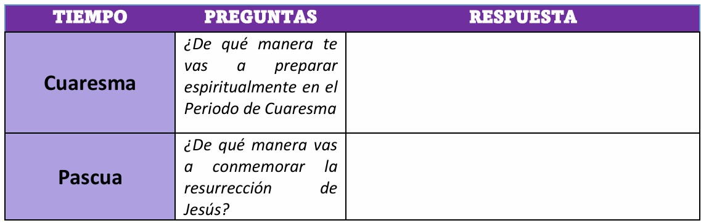

CONOCEMOS EL CICLO LITÚRGICO: SIGNIFICADO EN LA VIDA CRISTIANA.
PROPÓSITO:Los estudiantes valorarán la dimensión religiosa y espiritual reconociendo los ciclos del calendario litúrgico
para comprender las celebraciones religiosas en el año.
Leemos la oración del día:

Significado y propósito de cuaresma:
Profundiza su relación con Dios a través de la oración. Busca la conversión
arrepintiéndose del pecado. Practica la autodisciplina a través del ayuno y sacrificio.
Reglas de la cuaresma:
- Ayuno
- Oración
- Actos de caridad
- Limosna

Lee las preguntas sobre cuaresma y pascua, desarrolla cada pregunta:

Propuesta de salvación del antigui testamento
Propósito: Evaluamos la propuesta de salvación
¿Qué es el pecado?
Se define como transgresión, rebelión o desobediencia a los preceptos de Dios.
Lee las siguientes citas bíblicas para comprender mejor:1 Juan 3:4, Romanos 3:23, Santiago 4:17
¿Qué es el perdón del pecado? Response leyendo la siguiente cita bíblica 1 Juan 1:9
Responde:
¿Que pecados consideras que la sociedad viene cometiendo últimamente?
¿Cómo puedo librarme del pecado?
Confesión
Es el acto de reconocer los pecados ante eun sacerdote para obtener el perdón de Dios.
Práctica:Colorea de rojo lo que hace sufrir a Dios y de amarillo lo que lo alegra
| Amor | Unión | Odio | chisnes |
| paz |
desobedecer |
fastidiar |
oración |
Responde:
¿Cuáles son las cosas que me apartar de Dios?
¿Alguna vez desobedeciste la voluntad de Dios?